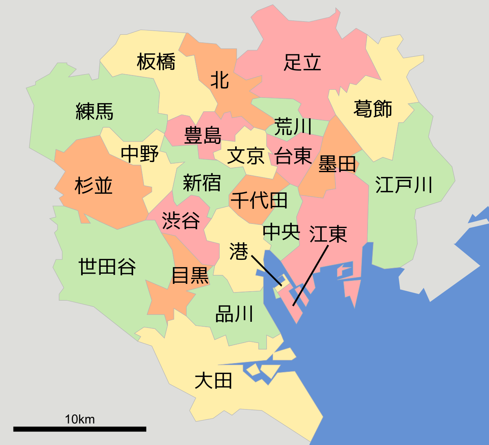

四季を紹介
日本には「春」「夏」「秋」「冬」の四季があり、それぞれの季節が日本の自然の風景を彩り、楽しませてくれます。
日本の気象庁では、春は3～5月、夏は6～8月、秋は9～11月、冬は12～2月と定めています。
日本列島は南北に伸びているので、地域によって気候の変化には差がありますが、温帯地域に属しているので、季節の変化が比較的はっきりしています。
四季がある国は日本以外にもありますが、日本は特に「春」「夏」「秋」「冬」の四季をしっかり感じることができます。
東京を紹介
東京都は関東平野の中央部に位置し、東京湾に面しています。
明治維新によって日本の体制が大きく変わったことをきっかけに、明治2年（1869年）に京都から都が移されて以降、日本の中心都市として栄えてきました。
経済規模も大きく、東京のGDPはメキシコや韓国などを上回っているとされています。
東京都は、23区に分かれており特別区といいます。
23区とは
東京23区は特別区と呼ばれ、政令指定都市の区とは異なり各区が独立した自治体です。
以下、抜粋した区を紹介
| 区名 | 特徴 | 市役所HP | 備考① | 備考② |
|---|---|---|---|---|
| 千代田区（ちよだく） | 皇居を取り囲むように行政区域がある | 市役所HPへ | 日本の中央駅となる東京駅、国会議事堂、中央省庁（霞が関）を含む、文字通り日本の中枢機能 | 他にも電気街の秋葉原、古書店街の神田神保町など、誰でも聞いたことのある地名が目白押し |
| 中央区（ちゅうおうく） | 銀座、日本橋、築地など商業地が豊富 | 市役所HPへ | 特になし | |
| 港区（みなとく） | 港区は23区の中でも人口密度の低い地域 | 市役所HPへ | サラリーマンの街と呼ばれる新橋、続いて浜松町と、ビジネス街の豊富な港区。その一方で赤坂・青山や麻布十番・六本木、いわゆる「お台場」も一部は港区です。南側の品川駅周辺には、高級住宅街で知られる白金台もあり、港区は様々な顔を持っています。 | |
| すみとく！-住みたい街・国内移住データ【全国版】から抜粋 | 参考サイト | |||